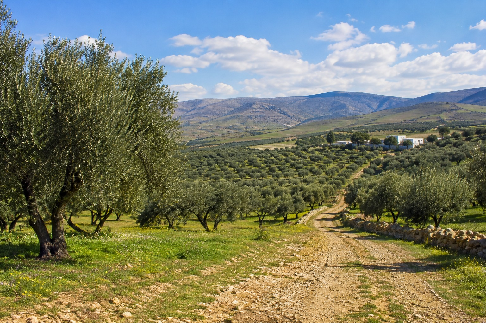

THALA FARM est une exploitation agricole locale située à Thala. Nous valorisons les produits agricoles de notre région avec passion, qualité et respect de la nature.
Une agriculture proche de la nature et de notre terre.
Des produits sélectionnés avec soin.
Nous valorisons les produits de Thala.
Découvrez quelques-uns des produits agricoles de THALA FARM.

Vous souhaitez en savoir plus sur nos produits ?
📍 Thala, Kasserine, Tunisie
🌿 THALA FARM